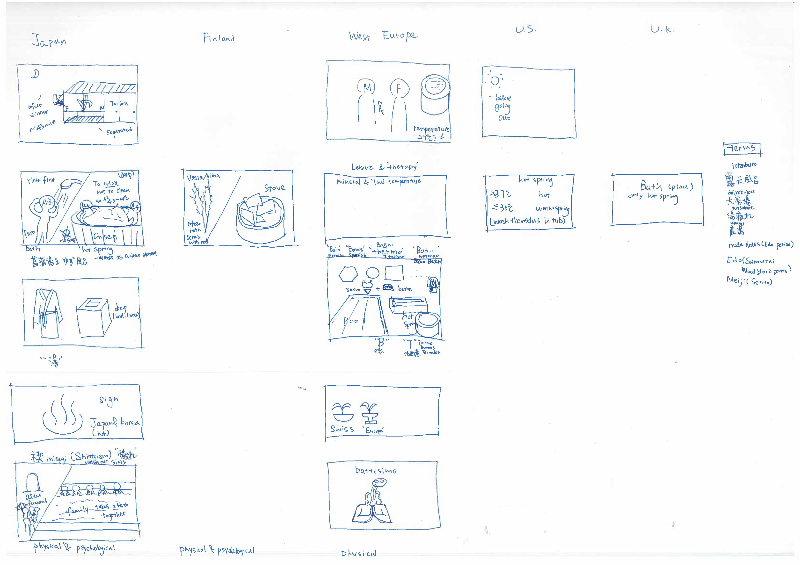
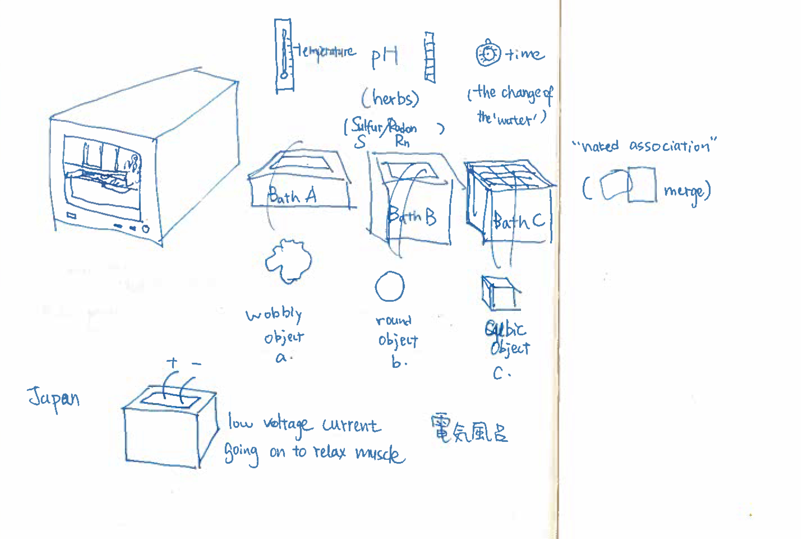

Summary of the week
//in progress//
First Ideation
First ideas include:
. trying to combine bathing culture and tool-human relationship. Think of the steam, the water
. dressing up Luca and K as Cola cans and have them interact with each other. Dont ask why
. using one object, e.g. a pen, and design its interaction in the way that major western/eastern phylosophies would have done it. How would Plato design a pen? How would a Taoist pen be? How would a Christian pen be?
. designing interactive chairs that have feelings towards the user and towards each other. OOO
From that point onward, we decided to investigate three areas, trying to bring forward concepts of animism, shintoism, phenomenology and object-oriented onthology. Pretty much wild and free exploration, a bit de-contextualised.
Material Explorations
nakia, with reference also to bathing as the drawings are cool
 Shape Explorations
relationships between objects and a human being in animismInteraction Explorations
Doing interaction studies without a context proved to be quite fun for nerds, yeah. All in all, we tried to put together a very simple scenario. We aimed at a neutral object of neutral shape. The closest we could get to such an ideal situation was a pair of trivial sticks. In the scenario, one stick is an actuator and one is a sensor. Two behaviors were designed, thinking of the ideas of animism and OOO. The underlying questions of these exploration where:
. can the behavior of an object manifest the fact that the object has a spirit, or an inner form of identity, at large?
. is that even relevant, meaning, how would the perception of an object change to me if I knew it has a soul?
Ovbiosly the two scenario that where investigated are quite speculative and, to some extent, ridicolous.
Curious/Playful behaviour
What if any object could be animated through some actuator and be able to communicate with you when it wants to interact, much like a pet-owner relationship? In this scenario, the stick on the left calls for attention and then follows the position of the stick on the right, once it is touched by a third object, a human.
Angry/Protective behaviour
Starting from an anecdote, few nights back Luca squeezed a soda can in front of Nakia and K. Nakia shivered and K admitted it hurted somehow, while Luca just thought he did squeeze a piece of aluminum, nothing more. Do object perceive pain? In this scenario, when the stick on the right is perturbated and mistreated by the object-human, the stick on the left jumps onto the stage in order to defend its mate.
Tutorial
//in progress//
Conclusion
//in progress//